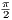
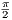

arcsin(x)
Sappiamo che il dominio della funzione sin(x) é tutto R mentre il codominio (range) é l’intervallo [−1,1]. La funzione sin(x) non ha dunque inversa? Allora ecco perchè si considera un suo restringimento ossia si considera come dominio solo l’intervallo [−,]. Ricordati di invertire gli insiemi quando pensi all’arcoseno e quindi all’inversa.